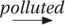

Human communication is a magical mix of art and science and if I were to focus only on those criteria that I set out at the start – simplicity, detail, efficiency, precision, explaining each detail, purpose, addressing the complexities – I’d have an accurate, to-the-point explanation. The question is: would people want to consume it? Would they choose to consume it?
How do we avoid making people feel rushed or overloaded? Does an ‘efficient’ explanation simply become too much? In the case of my early efforts on British Airways in-flight radio, this was certainly the case.
Do we risk offering an explanation that may be a decent distillation of what we want to say, but is the explanatory version of some undercooked greens – good for you but not much fun to eat?
This risk is the reason that ‘engagement’ is included in my anatomy of a good explanation. It’s also the reason that I never assume I’m going to successfully explain myself. Not at least until I’ve been through Step Seven. My time at university and my early forays into journalism taught me some useful techniques to sift and collate information. What took my ability to explain further was when I started to understand that how to keep someone’s attention was just as important as the information I was preparing for them. We’ve already talked about how the ‘dial test’ makes sure we’re thinking about this and how ‘joining phrases’ can avoid those dreaded ‘hard stops’. But there’s something more we’re reaching for here – and, again, it was music and musicians who helped me see it.
Not for the first time, let’s turn to Los Angeles in the 1970s. We’ve already been there to think about how Joni Mitchell’s music communicated with us on the album Blue. This time, I want to talk about one of the great electric guitar players you may never have heard of.
In the seventies in LA, top session musicians were commanding such good rates that they often opted out of being in one band. Instead, they worked with whoever they chose. It gave them a broader musical experience and, sometimes, it paid better too. Dean Parks was one of these session musicians and, through his career, he’s been called up by the biggest names.
He played on Michael Jackson’s album Thriller. He’s performed with Elton John, Stevie Wonder, Madonna, Billy Joel and many others. It’s a seriously impressive list. And when the group Steely Dan set about making what would become their 1977 album, Aja, they also turned to Dean Parks.
The context here is that Walter Becker and Donald Fagen, who made up Steely Dan, were infamous for burning through session musicians in their search for the sound they wanted on each track. To say they were sticklers for detail rather undersells the lengths they would go to. Sometimes a long line of session musicians would take their turn just to settle one solo on one track. Becker and Fagen were also trying to make music that was played on the radio and that sold well. This wasn’t bubblegum pop music but equally it wasn’t an exercise in deliberate obscurity. By the time they were making Aja, Steely Dan had already released five albums which had reached the US Top 40. No doubt, they hoped this new effort would follow suit – and it duly did.
I love this album and so needed no persuading to watch the Classic Albums documentary about how it was made. Walter Becker and Donald Fagen sit at the mixing desk with all the original elements of the tracks and talk through what they did back then – intercut with some of the musicians they worked with, including Dean Parks.
I’m reasonably confident he wouldn’t have imagined that the interview he was giving about 1977 would feature in a book about explanation many years later, but that’s what’s about to happen.
We see Dean Parks sitting in a suitably LA scene – by a pool in the sunshine – as he explains the working experience of playing with Steely Dan.
One interesting thing about Donald and Walter is that perfection is not what they’re after. They’re after something that you want to listen to over and over again. So we would work then past the perfection point until it became natural. Until it sounded almost improvised. So it was a two-step process. One was to get to perfection. The other is to get beyond it and to loosen it up a little bit. It’s quite an amalgamation, that’s for sure. And it’s interesting to know that it can be a hit.
This was another of these moments that hit me straight away. I rewound the documentary and watched it again. I’m slightly embarrassed to admit, I felt a surge of excitement and my eyes widened. I was launching my programme Outside Source at the time and I had sometimes struggled to explain exactly what I was hoping to achieve in terms of style and tone. On the one side, I wanted the programme to be higher protein, more efficient and more detailed than some TV news. On the other, I wanted it to feel more informal, more approachable and more spontaneous than some TV news. On the face of it, these two ambitions were in competition. I knew that they weren’t, but I’d been struggling to express it. Dean Parks captured this much better than I was managing.
The two-stage process that Dean Parks describes is exactly how I approach any form of explanation. The first stage is Steps One to Six. Getting everything as tight as we can. But, as Dean Parks puts it, Steely Dan were trying to create something that people would ‘want to listen to over and over again’. Now, even my mum doesn’t watch my explainer videos or TV programmes over and over again. My goal is to get people to really listen to us once. But the point still stands. To get people to listen, we need the second part of the process – to, first, get everything perfectly lined up, and then to ‘loosen it up a bit’. That is Step Seven.
When Rolling Stone reviewed Aja, it described how Steely Dan had shifted from ‘the pretext of rock and roll toward a smoother, awesomely clean and calculated mutation of various rock, pop and jazz idioms’. Clean and calculated. This, again, resonated hard. But as Dean Parks noted about the album, ‘it’s interesting to know that it can be a hit.’ It was – selling more than any of their other albums. Steely Dan had mastered being both tight and loose.
All of this may feel like a sizeable and slightly random tangent away from the nuts and bolts of constructing an explanation. In fact, it’s right at the heart of it.
As my explainer videos were first becoming popular, the Reuters Institute for the Study of Journalism invited me to do a seminar about them. The associate director for its fellowship programme, Caitlin Mercer, was the host.
‘There’s something I noticed while watching your explainers,’ Caitlin said to me as we got going. ‘I noticed I sort of started keeping time and I noticed at around every eight seconds, something new is happening: so a graphic is changing, a new voice is coming in. And it’s almost like a song. Is that conscious?’
The answer was a resounding ‘Yes’. I am acutely aware of the rhythm of how I deliver explanations. The best written and verbal explanations have a rhythm, a personality and a fluidity that complement the precision and relevance of the information they are passing on. Here’s how we can try to make sure your explanation has that.
One of the best ways to check our explanations is to use the knowledge that we all have about how we communicate with each other. Earlier, I was saying that I always ask of all my explanations: ‘Would I talk like this?’ And, if the answer is no, it has to change.
There’s something similar with how explanations flow. This can be hard to define but a story, essay, speech or argument should have a ‘flow’. The vast majority of the communication we receive is spoken and we’re all expert at it. We know when someone is making sense to us and we can also tell if someone isn’t. When there’s a ‘flow’, we’ll find it easy to follow – there will be a natural progression through the information we’re hearing. If we stop to think about it, we can spot when it’s there and when it’s not. Even if we’re not sure why, it’s possible to feel it.
As you’ll have already noticed, I have a preoccupation with how we join information together. When I use the word ‘flow’, that is really what I’m talking about – the way that we take who we’re talking to through the explanation. When the flow is right, there is a logic and rhythm to your words. If the flow is off, the joins will almost judder – either because they don’t quite make sense or because the rhythm of the words doesn’t match what’s gone before and what comes after.
This may sound like an elusive concept but it’s not as elusive as you might imagine – because you know when you speak clearly and you know when someone is making sense to you. Here we can use those instincts. We do so using verbalisation.
I verbalise every explanation that I write, whether it’s to be read or heard. For me, however hard I concentrate when reading an explanation in my head, it doesn’t come close to being as effective as saying it out loud. Even after twenty years as a news presenter, I still cannot be sure a script is quite right until I’ve said it out loud, often several times. When I do this, I almost always make changes.
I think of this as ironing out all the creases. It’s not about the big ideas in our explanation or the facts or the structure – we’re happy with all of those. This is about the flow and how well the whole thing hangs together. This isn’t only about improving the way the information is delivered. In the case of spoken explanation, it will also help identify stumbles or sections where you lack precision and punch.
Start by opening up your explanation and reading it at a slow-to-medium pace.
Don’t rush through. You want to have the chance of picking up every crease. As you read, ask yourself:
• Does this sound like me?
If it doesn’t, is there an adjustment you can make so that the words feel like your own?
• Does each sentence logically move on to the next?
If they don’t, try adjusting the end of the first or, often more easily, the start of the next one to make the join work better.
• As each sentence follows the one before, does it feel right to you?
If it doesn’t, can you pinpoint the word(s) where the flow doesn’t feel right? What is it about how those words sound that isn’t quite right?
After each adjustment, read it out loud again. If it’s worked, great. If it hasn’t, keep trying until it’s right.
There is one simple rule of thumb in this part of the process. If it’s not right, don’t leave it. These ‘creases’ can really affect the way you deliver explanations. Remove them all and the overall effect can be very powerful – both for how comfortable it is for you to deliver and for how clear and confident you will sound.
‘Another time?’ you ask. I’m afraid so. I think of this as the bike-repair-shop moment. You know, when you take your bike for a once-over and the mechanic checks the chain, the cogs and so on. Once their work is done, they raise it on to a stand and spin the wheels and, all being well, it whirrs smoothly.
Read your explanation out loud once more. All being well, your explanation is going to be smooth too. If it is, nothing about your explanation is going to change (which is a very good feeling). If it isn’t, what’s causing the crease? Normally you can pinpoint a word or two. Alter them and read it out once more.
If yours is a written explanation, your work is done. It’s complete. It’s ready to use. That’s a feeling I never get bored of.
If yours is a verbal explanation, you’re almost there but not quite. First, let’s look at the visual elements which will accompany your speech or presentation, if you’re using them. If you’re not, you can head straight to page 188.
In Step Four, you made an initial list of visual elements that you thought you would add to your explanation. Now it’s time to revisit them. We need to decide which of those elements we want and where they are going to go.
Open up your script and your list of visual elements and start marking on the script where they should go.
As you do, keep in mind two things.
First, consider what is behind you at all times. If you bring up, say, an image that supports your words and then move on in the script, that image will still be there but will no longer match what you’re saying. Some visual elements will work across a longer passage of your talk, some will only work for the moment you’re explicitly referring to them. I’m always on the lookout for those visual elements that can be a bridge through sections of my explanation.
Second, timing is crucial. I’m a stickler for this. If you can get your timing precise on visual elements, then they will have far greater impact.
This is something I spent a lot of time working on when we created Outside Source. As I’ve mentioned earlier, the idea of the show is that we collate all the most essential information on a story in whatever form it comes. It’s then my job to weave it all together. The challenge is that there are often many elements – just as there may be in your explanation – and if they are visible at the wrong time, it’s both distracting and incoherent.
For many years, we had a touchscreen which I’d use to pull up the elements. To make sure the timing was just right, I put instructions in the script. I use something very similar for any explanation I’m giving that involves visual elements. Here’s a simple fictional example of how it works with the touchscreen.
INTRO
A large protest has begun in Paris.
MAP
It’s taking place around the Arc de Triomphe which you can see on the map here. And there have been clashes.
IMAGE
This is one picture taken by a Reuters photographer. Here we see regular police.
IMAGE
But in this second picture we can see riot police too. They’ve been sent in by the City’s Mayor
QUOTE
. . . who has called the protestors ‘trouble-makers’.
VIDEO
And look at this – this is a video from a side street where more and more people are trying to join the protest.
You can see how I would position the instructions exactly when I wanted to introduce the elements – not necessarily at the end of the sentences. There is a direct connection between my words and what you would see. The combination gives what you’re saying the greatest chance of impact because the words and visuals are working together for a common purpose. You can also build momentum in your story.
If you were telling the story of how you built your company from scratch and wanted to show its profits in 2010, 2015 and 2020 – if you placed all that information behind you at once much of the drama is lost. Instead you could do this:
GRAPHIC SHOWING THE DATE
I created the company in December 2008. At first it remained small.
GRAPHIC OF 2010 PROFITS
In 2010, our profits were £50,000. We reinvested that. And borrowed more. By 2015, though, we’d expanded across the EU. Our profits were . . .
GRAPHIC OF 2015 PROFITS
. . . £1.5 million. We hired more staff, paid off our debts . . .
PICTURE OF ORIGINAL HQ
. . . and moved from our tiny offices in West London . . .
PICTURE OF NEW HQ
. . . to much bigger offices down the road. And by 2020, our profits . . .
GRAPHIC OF 2020 PROFIT
. . . were £5 million. We were bigger than I’d ever imagined we could be.
Each element builds on the next – supporting the information you want to communicate and building a narrative that, we hope, the audience wants to hear more of.
Doing it this way, you end up with lots of visual elements and lots of slides. That’s fine. It doesn’t mean you’ll take any longer; it just means that your visuals are much more finely tuned to what you’re saying.
Having chosen your elements and ordered them, try talking them through with the script. Can you feel that the two are in sync? If not, adjust the visual elements until you feel they are always supporting what you want to say. Keep trying until you’re happy both with their position and your ability to bring them up as you deliver the words.
I use exactly this technique in any presentation I’m giving.
One final thought on this – if your words and the elements are relevant and riveting, you don’t need any bells and whistles. Don’t use any fancy sounds or animations unless they actively add something to your explanation. Otherwise they risk distracting and sending a message that you need them to make it interesting. If what you have to say and show is relevant, clear and efficient, more likely than not, your audience will pay attention.
By this point, you are a long way into preparing the delivery of this explanation. You’ve read your work multiple times. You’ve checked its flow. You’ve removed any creases. You’ve also chosen, ordered and timed any visual elements you may need.
And these visual elements are part of your next calculation – how you plan to make sure you say exactly what you want to say.
At the moment, you’ve written your explanation out in full. As I mentioned earlier, there will be some circumstances – a set-piece speech, a formal work presentation – where you want to have every single word nailed down. In which case, what you have doesn’t need changing. But do think carefully about whether this is the best option. However well you read those words, unless you have some form of autocue (or teleprompter as they’re also called) you will struggle to disguise that you are reading.
(Barack Obama always used a teleprompter for speeches, as do many US politicians. They use the transparent ones that are set just to the right and left of the lectern. That’s why if you watch their speeches, they look to one side and then the other. It allows them to deliver a speech in a way that is both natural and on script. Unfortunately for most of us, this technology is unlikely to be available when we give a talk.)
Reading word-for-word has its attractions. You can guarantee the precision and clarity of your language. You can time your explanation very well. You have complete control. But there are risks and downsides you should be aware of.
The first is a practical one. When you look down at the page, a lot of words will greet your eyes. In that split-second, you need to be able to find your place to continue. This is hard when you’re practising. It’s harder if the pressure is on. Even as I’ve become more confident with public speaking, I know well that feeling of looking down and not finding my place instantly. It can take less than a second for the mind to start racing. And while your eyes scan frantically for the place you want to pick up from, you need to pause, which in turn can impact the rhythm and delivery of the explanation.
If you do need to read a script, here are three practical measures that can help. Ask yourself:
• Is the font size big enough to make the words easily discoverable at a glance?
Remember, you’re not laying this out for anyone other than you to read. It might be a little ridiculous to publish an article or produce a handout or pamphlet with twenty-point font. That isn’t what you’re doing here. The words only serve one purpose – to help you speak. Making them big enough to read easily is helpful. Though the bigger you go, the more page-turning you will have. You’ll soon enough get a feel for what works for you. And you won’t be the only one doing this. If you ever see major speeches being given when the speaker is reading off paper, they tend to arrive with a thick wad of A4. Even experienced operators prefer bigger fonts for these moments.
• Are the lines spaced out?
Lines with minimal spacing between them (such as this book and, indeed, most books) make it harder to locate specific points in the text. Not a problem if you’re reading a book, but it can be a problem if you’re explaining yourself from a script. Again, you’ll work out what feels best but I prefer 1.5 line spacing if I’m reading direct from a script.
• Have I added headers?
Headers are very common in many forms of written text from this book to an article in a magazine or on a website. In those cases they’re used to signal the subject of the section that you’re about to read. In this, they are there only for you. They are very helpful if you need to find your place in an instant. Add as many as you find helpful. I tend to not hold back.
Having a fully scripted explanation will feel right sometimes. For me, though, and I suspect for you, a lot of the time using a word-for-word script is not going to create the effect that you’re looking for. It risks being overly formal and constraining your ability to connect with the people you’re addressing. It’s also not the easiest way of accessing the explanation you’ve prepared. That’s where bullet points come in.
Whenever I prepare to give any form of verbal explanation, if I have notes or a script, I always check if the words I’ll be looking at are there to make me feel better or to actually make me better – because these two things are not the same!
Word-for-word scripts can feel comforting but a lot of the time they won’t make your delivery better. Bullet points can do that. Having only the most important words in front of us is, in many cases, more likely to achieve that.
If you do want to prepare bullet points, copy and paste a new version of your full explanation. (We want to keep the full script as a reference, so don’t delete it.)
Now take each section in turn.
How much can you strip out and still remember what to say?
Which trigger words will be enough for you to remember that section?
If you’ve stripped too much out or don’t have enough trigger words, put some back in until it feels right.
Experiment with what you have and, remember, the first time you try this is very unlikely to be your best. I often start with more bullet points than I end up with. As I practise and it becomes more familiar, I strip the bullet points back.
At first don’t try to do the whole explanation. Initially, practise each section on its own – and allow yourself to look at the bullet points all the time. When you feel comfortable with each section, then practise stitching two together. When that feels comfortable, add more sections and so on.
Keep adjusting the bullet points as you do this. They have no other purpose than to help you deliver a fluent and precise explanation. When you feel you’re approaching that point, go through the process again but this time imagining you are addressing your audience. You will now be looking away from the bullets frequently. This, of course, is much harder. But you might get a nice surprise. By forcing yourself to talk through the sections with no script and only bullets, your brain will have become much more comfortable with constructing these sentences in the moment than if you’d been practising with a script.
The sentences you’re saying out loud will, if you’ve written this explanation out in full, be based on sentences that exist. As such, we want them to be similar to what you’ve already decided to say. Each time, though, they will vary a little as you deliver them. That’s not a problem. In fact, this is where something magical can happen.
The key phrases of the explanation that you’ve produced will start to become incredibly familiar. You will always say them almost exactly the same way. But because you’re using bullets and not a script, the words that you place around these key phrases will inevitably vary and will feel natural and spoken (rather than scripted and read). When this works well, you land the lines that matter most with confidence, clarity, control and consistency, but in a way that is far more engaging because you’re speaking to people not reading to them.
As you practise, you’ll also start to notice the moments when it is most natural to glance down. You might want to note those or at least make a mental note of them. Glancing down is both a moment to get help but it’s also a moment of danger – when your explanation could lose purpose and engagement. The more you know about when and how you’re going to look down, the more the bullet points can help you.
As you can probably tell, I’m an enthusiast of bullet points. I use them all the time from major set-piece presentations to live reporting on TV and radio to a talk where I’ve had minimal time to prepare. They are a really effective way of achieving both precision and fluency.
Here’s an example of how I’d prepare bullet points. This is a section of a talk at a media conference that I gave in 2022 not long after Boris Johnson announced he’d stand down as Prime Minister. For various reasons, I decided to do this one from a full script. But had it been a more informal setting, I’d definitely have used bullet points, and this is how I’d have prepared them.
What I wanted to say
Delighted to be here to talk to you about the future – and about news. I want to start by going back to Wednesday 6 July. It was a warm summer’s evening – and I was standing in Downing Street.
A few metres away was the famous black door of Number 10 – and behind the door was Boris Johnson. The PM was in deep political trouble. Many of his colleagues wanted him to go – and in that moment, we all wanted to know one thing – would he go?
But of course I didn’t know. I certainly didn’t know that the next morning Mr Johnson would bow to the pressure.
Historians may decide his departure was inevitable. But standing in Downing Street – staring at the windows with the lights still on that dramatic Wednesday night, I didn’t know.
But I did know plenty of other things. I knew what Conservatives were saying. I knew what the best Westminster journalists were reporting. I knew the processes for Boris Johnson to survive and for him to go. I knew the long-term reasons why he was in trouble. Whatever the next development, whatever the future, I was prepared with the information that gave me the best chance to respond to the story.
First set of bullet points
Here I have done two things. I’ve taken out words that aren’t needed for me to get the gist of the sentence. I’ve also taken out information I’m certain I’m going to remember. For example, I am delighted to be giving the talk, but I know I’m going to remember to say that!
Intro
• Here to talk to you about the future – and about news.
• Wednesday 6 July. Warm summer’s evening. Downing Street.
• Famous black door of No. 10. Boris Johnson in political trouble.
• Many of his colleagues wanted him to go. Would he go?
My situation
• Didn’t know that the next morning Mr Johnson would go.
• Historians, inevitable.
• Downing Street, lights, Wednesday night.
What I did know
• What Conservatives were saying.
• What Westminster journalists were saying
• The ways that Boris Johnson could survive or could go.
• Long-term reasons why he was in trouble.
• I was prepared with the information that gave me the best chance to respond.
Stripped-back bullet points
By this point, I’ll have rehearsed the speech several times. The phrases, descriptions and points I want to make are very familiar. So all I’m looking for from the bullet points are triggers. These will be enough to prompt me to say whole sections that are very familiar.
Intro
• Wednesday 6 July. Downing Street.
• Would he go?
Situation
• Gone the next morning.
• Inevitable?
What I did know
• Conservatives
• Journalists
• Process
• Long-term
• Best chance
Or if I was feeling really good . . .
• Wed 6 July
• Situation
• What I knew
Those three reminders may be enough to trigger everything I want to say in this section of the speech.
ASK YOURSELF
• Is the font big enough?
• Is the spacing right?
• Can I easily see bullets at a quick glance?
• Can I talk through each section fluently with only the bullets for prompts?
• Can I talk through the entire explanation fluently?
• Would it be better if I added or deleted bullet points?
• Am I confident when I want to look down?
As well as a script and bullet points, there is a third option available to you – to memorise the whole thing. Now, if you’re giving a lengthy talk with no visual accompaniment, this is quite an undertaking. There are two ways to do this. You could memorise an entire script (in a way that an actor learns a script). I’ve never done this and, while I am happy to be corrected, can’t think of any situation when you would need to be word-for-word perfect. Let’s leave that to one side. The second version is essentially to prepare bullet points as we did in the previous section and then to learn both the bullets and what you want to say around them.
It’s not impossible and can lead to very convincing explanations – but always ask yourself, why do I need to memorise all this?
If there’s not a major need, I’d make things easy for yourself and stick to written bullet points.
If you’ve got a good reason, we’ll look at memory techniques that can really help take this on a little later.
Before that, though, there is one technique that allows you to speak without using any form of notes but doesn’t require every last detail to be committed to memory.
The difficulty level of talking from memory reduces sharply with a visual presentation to accompany you. In many cases, the slides (or any other visual support you’re using) can act as a prompt which makes being completely without notes much easier. They act almost as a replacement for the bullet points that you might have had. That’s the good news. There is a danger here, though.
The most convincing explanations have purpose and momentum. An explanation that pauses for a prompt every few seconds will not have either of those. I’m sure you can think of PowerPoint presentations where the speaker talks to a slide, pauses, looks at the screen, clicks on to the next slide, pauses again and then starts speaking again. It tends to not be the most arresting way of explaining anything.
As such, when we’re talking to slides, we want to talk into those slides. We need to know what is coming. So while slides or any visual accompaniment can be helpful in speaking from memory, we still need to know what we want to say. We can’t rely on the slides to tell us what to say next. I’d go further than that. That is not the role of the slides. Any visual accompaniment may well make your life easier by helping trigger what you want to say – but the reason it’s there is merely to support and add to what you’re saying, not to become the driving force of the explanation.
If you choose this route, practise talking through the slides. As you do, the order will become familiar and you’ll be able to talk into them rather than be prompted by them.
Now that you’ve decided whether you want to use a script, bullet points or to do it from memory, you’re on to the final piece of the jigsaw – how you’re going to talk through your explanation.
There are a number of ways to calibrate how you deliver an explanation. Let’s start with pace. This is yet another lesson that I learned the hard way. In my early days as a radio presenter, in my eagerness to be engaging, I sped up. Speed was also seductive, as the faster I spoke the more information I could include. Both calculations were wrong and, not for the first time, the audience may have wondered what had hit them.
To try to address this, I started to experiment with using the same engaged tone but lowering the speed. I still sounded actively interested in the subject – but the audience had more space to take in the information. My presentation improved.
I also traded speed for a focus on efficiency. If my language was efficient, then I would create more time for information even if I lowered the speed of my delivery. This helped too.
There was an added benefit. As my delivery slowed, my breathing improved, and if your breathing is controlled, you’ll speak with greater authority.
It’s worth experimenting with the pace and tone that suits you. The two best ways of testing how you’re doing are to record yourself and listen back or to ask someone to listen to you. If you feel shy about either, I can relate to that, but the rewards will outweigh any awkwardness you may feel.
If you do record yourself, my advice here is to make two columns – one for what you’d like to keep, one for what you’d like to change. Self-assessment can’t just be making a list of everything you’re getting wrong. You’ll be getting things right as well and it’s just as important you note those so that you can keep doing them.
Once you’ve settled on the pace and tone that you’re happy with, experimenting with shifts in pace can be really effective too.
Explanations benefit from emphasis. Some parts of what you have to say are more important than others. Pace, pauses and intonation can help mark that.
Here is an example:
This fall in sales was predicted. The industry body released this statement saying: ‘We’re very disappointed with what has been allowed to happen but sadly this was the only possible outcome once the regulations were brought in. We will be taking legal action.’ And look at the numbers it released. Sales in the sector were worth £100 million two years ago. Last year they were £10 million.
The first part of the quote is relevant but relatively predictable. I’d speed up through this. The three pieces of information in bold are the most important – the threat of legal action and the stark comparison. I’d look to slow around all three. Here’s the text again, but I’ve marked up how I’d deliver this – with bold for emphasis.
[Start at regular speed] This fall in sales was predicted. The industry body released this statement saying: [minor pause, speed up] ‘We’re very disappointed with what has been allowed to happen but sadly this was the only possible outcome once the regulations were brought in.’ It goes on: [back to regular speed] We will be taking legal action.’ [Minor pause] And look at the numbers it released. Sales in the sector were worth [slower] £100 million two years ago. Last year they were [minor pause] £10 million.
If you read that through following the instructions, hopefully you can hear how the shift in pace and emphasis can help communicate what is more important.
Needless to say, I’m not expecting you to go through every explanation you give plotting every point of emphasis in this detail. But it’s worth thinking about what matters most and how to emphasise that in your delivery. As with many of these techniques, experiment with what works for you.
When I joined the BBC in the 2000s, radio newsreaders would all mark up scripts to help them deliver the news summaries. I’d watch, fascinated, as the newsreaders would come into the studio for their bulletins. More often than not, across the desk I couldn’t make out the words of their scripts, but I could see the marks they’d made around the words. I’d never seen this before, but I had reason to be interested.
Whenever any of us are nervous, our breathing is likely to become shallow. If that happens, we need to take more breaths than we normally would. In turn, if that is happening, we’re more likely to do it right in the middle of a sentence. All of which can really disrupt how you deliver your words.
We’ll discuss how to manage nerves a little later on, but whether you’re nervous or not, planning how you are going to deliver your explanation is going to give you much more control and confidence in how you do deliver it – and breathing is a part of that. Your use of short, sparse sentences earlier in the process will already help but I use script-marking to give me an extra hand as well. Here’s how.
/ Pause
I don’t mark every pause that I’d naturally take between sentences. However, sometimes if we don’t pause at a certain point, we may run out of steam before we next have a chance to. I put forward slashes to tell me to breathe.
The house was uninhabitable. It was damp, the windows were smashed, the roof was leaking and, frankly, it stank. / We had to take the decision to knock it down and to start all over again.
// Pause for emphasis
I use double forward slashes to prompt a pause for emphasis. It’s longer than you might normally leave at the end of a sentence.
We had to ask ourselves several questions: //
Did we have the money to do this? //
Did we have the contacts to do this? //
And did we have the stomach to do this? //
→ Keep talking
This is a really important one. Often our flow, rhythm and breathing can be disrupted by pausing at the wrong point. If there’s a place where it’s crucial that you keep going, then draw an arrow underneath at the point where you might be tempted to stop. If you don’t plough on, you may pause briefly and then not reach the place where you can take a proper breath.
The area is beautiful. But there were three issues: the river was 
Underline for emphasis
If there are words that require emphasis, make them easy to spot.
The costs of the project had increased by 50 per cent.
I’m not suggesting you mark up every word of every verbal explanation you ever give. There will be times you’ll feel confident enough without this. There will be times when it’s not realistic to be looking at your script long enough to see all the marks. (Both newsreaders and presenters on the radio can look down the whole time and so have the huge advantage of not needing to worry about looking at the people we’re addressing.) Some of these rhythms will also become natural as you become more accomplished as a speaker.
However, marking up is a really useful way of thinking about how you want to deliver your words. I’ll often mark up a difficult or important section of an explanation in advance so I can practise it. I’ll experiment with pace, pauses and emphasis and, once happy, I’ll mark it and go over it a few times. Once I’m well grooved in how I want to deliver it, I might not actually use a marked-up script in the moment. The shape of it will now be so familiar it’ll happen without the need for marks.
I should add, I made these marks up and you should feel free to do the same. Their only purpose is to help your delivery and you’ll know what works best for you.
By this point, you’re really starting to know your explanation well. There’s one more thing to keep an eye out for.
You can have done everything right to this point and when you say a certain phrase, name or point, it doesn’t come out right. It’s just not rolling off the tongue and doesn’t feel comfortable. This matters because there’s a good chance you’ll trip up – or at the very least be preoccupied that you might, which, in turn, could affect how you deliver this section.
There’s even a well-known phenomenon that TV presenters are familiar with where you will prepare to pronounce a difficult name correctly, manage to get it right, but stumble on the words that immediately follow. Your brain has so focused on the problem, it doesn’t get the words on either side quite right.
If I think back to my teens, one of the things my piano teacher always told me when I was struggling with a section of a piece was to slow it down and go over it until I got it right. This is sound advice – and, if the potential stumbling block is unavoidable, this should be your first move here too. See if marking up the script helps you navigate the sentence or two where the problem is. If it’s a difficult pronunciation, write it out as it sounds and say it slowly over and over again.
However, there is a difference when learning a piece of music. If you were, say, learning a piece on the piano and there was a section you kept getting wrong, you would slow down and practise each part of that section in isolation, but you couldn’t actually change the notes. That option isn’t available to you. Happily, for us here, it very much is. There’s very rarely one way of saying something and, so, if your mind is aware of an issue with a phrase or name, change it if at all possible. Move away from it.
When I was getting going as a presenter, Mahmoud Ahmadinejad was the President of Iran and, however well I could say his name in the office, when I was in the radio studio I would stumble. Every time. Either on the name, or just before or after. It became a thing in my head, which wasn’t ideal as he was in the news a lot. With each stumble a colleague would, in a friendly way, send a guide on how to say the name. But that wasn’t the issue – I could say it perfectly outside of the studio. I decided to move away from the problem.
Each time, the name came up in a script or an interview, I’d reference the Iranian President or Iranian leader but not say his name. As far as I know, no one noticed, and I presented all the stories about Iran with more confidence. Within a couple of months, the issue had lost its sting and I started to drop in the occasional ‘Mahmoud Ahmadinejad’. With each one my confidence built, and the issue was soon gone. That was helpful for a time, though, once he was out of power, my ability to say his name with confidence wasn’t quite as useful as it might have been.
Never feel bad about simply removing a potential stumbling block. An audience only knows what you say, not what you were planning to say. So long as you’ve not compromised the essential information you need to get across, moving away from the issue is often worth doing.
This is one way of making yourself feel comfortable with how you’re going to deliver your explanation. In their different ways, everything in the ‘delivery’ section of this process is designed to do that. The connection with familiarity and the quality of your delivery is direct. This applies to the words you’re planning to say – and where you’re going to say them.
But before we get to that, a word about time-keeping.
It’s hard to overstate the importance of this one. If you’re sure what you have to say fits into the time you have, that’s one more thing off your mind.
You also reduce the risk of having to rush or jettison important information to avoid running over. All this will boost the confidence and conviction of your delivery. And it means you say all of what you planned to say.
The flip side of this is that rushed delivery, last-minute ditching of elements or simply crashing through the end of your allotted time does nothing for the confidence the audience has in you.
Now, the trick here is to make sure you’ve accurately timed what you have to say. That’s harder than you might think. This advice comes from experience.
Sometimes I’ll be asked to estimate the timing of a script for a report we’re making. I’ll sit at my desk in the newsroom and read it through with a stopwatch going. ‘Now can you do it as you’re actually going to say it?’ one of the producers will ask with a twinkle in their eye. They know I’ve got form for reading slower when it’s the real thing. Which means I risk telling them the report will be, say, three minutes, when in fact it will end up being four. Being realistic with your estimates is a valuable discipline.
I’m normally very tuned in to getting this right when public speaking. I do lots of it and I very rarely bust the clock. But the other day I was reminded once more of the perils of getting your timing estimate wrong.
I was giving a speech at a conference in Copenhagen. I’d done everything that I’m advocating in this book in terms of preparation – and when I timed myself in advance it matched the speaking slot I’d been given.
When it was my turn to speak, everything seemed to be going well. I was in full swing when the moderator politely cut across me: ‘I think we’ll need to move to your final thoughts.’ I’d fallen foul of two common traps. My delivery was slower than when, relaxed in my hotel room, I’d rattled through the timing of the speech. Second, sometimes we’ll add extra words and phrases as we go through a talk. It can sound fluent and informal, but it adds time (and makes us less precise). I’d done both of these things and, now, with a panel waiting to start, was out of time and having to ditch the conclusion of my speech.
The frustrating thing was that I could easily have cut it back in advance – but I hadn’t spotted that I needed to. It was a sharp reminder to follow each step carefully and, in particular, to always properly assess the duration of what you plan to say – and, if possible, to leave some leeway. This is especially important when giving presentations in interviews or pitches where you want to be in control and to get all your points across. Now every time I assess my timings, I think of Copenhagen . . .
When I arrived at university, I religiously listened to a BBC 5 Live programme called Up All Night. I mentioned it earlier when discussing authentic presentation. Up All Night covered an eclectic array of stories from around the world and, whatever I’d been up to in the evening, I’d switch it on and be taken here, there and everywhere as I fell asleep. I loved it. It made me want to work in radio and it deepened my desire to be a global news journalist. Ten years later, to my delight, I was a producer on Up All Night and, having already contributed segments to the show, I was asked if I’d cover for one of the main presenters one weekend. Of course, I said yes and then had several weeks to ponder what was coming my way.
My first go at Up All Night was, I think, a Friday night. This wasn’t just my first turn on this show, it was my first time presenting anything on the BBC. Not just that, it was 5 Live, a network I had gorged on for years – not least when I’d been unemployed a few years earlier. By any measure, this was a big deal for me and, as the moment approached, I felt anything other than OK. I was preoccupied, felt profoundly out of control and was, to use the non-technical term, in a huge tizz.
‘What can you do to help this?’ my wife, Sara, asked. As I replied, it was clear I wasn’t nervous about doing the interviews – I’d done quite a few of those on air before. What I was anxious about was everything that came with being at the helm of the show – how to start it, where the music came in, when I went to the news and so on. ‘The furniture’ is the jargon we use to describe the fixed elements of a programme. I knew the furniture as a producer, but I didn’t know how to present within it.
‘I think you need to go in,’ Sara suggested. ‘Can you get access to a studio?’
I could. I arranged to book one and for all the music I might have to talk over to be available. Feeling slightly silly, on a day off I travelled an hour from our place to the BBC. When I got there, I sat in the studio and practised everything again and again. From the more complicated aspects, such as the start and end of the show, down to the more straightforward tasks, such as ending an interview and talking into the news. I even did the easier ones repeatedly until I was really comfortable with them. I also familiarised myself with where I’d put my notes, where the computer was, where the microphone was, where I’d be looking to see my colleagues through the glass in the gallery. A couple of hours later, I headed home.
That Friday, I topped that up. I made sure to be in the 5 Live studio as early as I could. Our very patient sound engineers helped me go through the furniture further times. And then the clock edged inexorably towards the start of the show.
Don’t get me wrong, I still felt a long way out of my comfort zone. It was scary and my start wasn’t perfect. But it was OK and I got through it because, though there were a lot of nerves, I was feeling nervous in surroundings that I was familiar with. That helped.
I remembered this experience ten years later, when I was asked to host a set-piece live TV debate for the 2013 German election. The whole set-up was intimidating. It was a big-budget production. There were, I think, five cameras, with one being on the end of a boom for the sweeping opening shot. We’d set up in the grand courtyard of the German Historical Museum in Berlin and had an audience of around a hundred coming. I’d rarely done a programme this high profile or expensive. Plus, it’d be live, so there would be no second chances. It’s fair to say I was feeling the pressure. And in Berlin that week I applied the lesson I’d learned many years earlier that day at the 5 Live studio.
The day before that live debate, I decided to work in exactly the spot where we were broadcasting. As the crew assembled the set, I worked on my scripts right there (while being careful not to get in the way!). Then, when the set was complete, I talked to the producers about our plans right there on set. I began writing and rehearsing my scripts on set too. I wanted to try to feel at home there. Again, it helped when the moment came the next day. I can remember the director counting down ‘three . . . two . . . one’ and me being nervous but also in control.
I do versions of this all the time – whether broadcasting or otherwise. Even if I can’t get into the space where I am going to be talking, I’ll try to find out about it. I had to give a talk to the BBC’s Executive Committee a few years ago. I’d never been in the room before and I wouldn’t be able to see inside it on the day, as the Committee’s members were in there behind closed doors. In the days before, though, I made a point of asking about the format and the layout, right down to where I’d be sitting in relation to the screen I’d be talking to.
My point here is not that you have to do this every time you do any form of public speaking. Not at all. I’m sure there will be times when you have no knowledge of what awaits and speak brilliantly. However, this is simply another thing you can do to make yourself comfortable. I find the more I do this, the better my chance of explaining myself well. It all adds up. What you wear is part of that too.
Fear not. You’re not about to be on the receiving end of styling advice. I know my limits, and this is a line I won’t be crossing. But it’s worth noting that feeling comfortable and confident in what you’re wearing can influence how well you speak. Until relatively recently, I had minimal confidence when it came to selecting work clothes. I became aware that fretting about this was becoming a distraction. I’d be thinking about my clothes when I could have been preparing. Or I’d be fretting about them when I was actually speaking. Feeling comfortable in your clothes is, for me, as much about removing that distraction as it is about looking snappy.
I was so aware of the issue I sought out the help of a brilliant stylist called Jane Field (a decision which led to my ongoing commitment to dark blue). Now, I understand that a stylist may neither be possible nor necessary for you. I’m also sure you know a lot more about clothes than I do. My only advice here is to resolve what you want to wear in the different circumstances that you’re likely to encounter. I have three or four outfits that I’m happy with for certain situations that keep coming round. It means that I don’t waste time ahead of pressured moments making those decisions. If you don’t know what clothes work best for you, consider who you know who could offer some advice.
If all this has gone well, as you prepare to deliver your explanation, you’re comfortable with the environment in which you’ll be giving it and your outfit is set. But there is still one small extra I always do.
People always laugh when I say this one but, believe me, a hands plan is worth having. Much like other advice I’ve given you, this is in part about what you can add to an explanation but, just as importantly, it’s about removing distractions. And believe me, if you don’t know where your hands are going to go, they may take on a life of their own.
A hands plan doesn’t take very long.
The first question I ask myself is whether one hand or another is likely to go rogue. In my case, I’m right-handed and so I tend to use my right hand to gesture. If I’m sitting at a desk or standing at a lectern, I’d normally resolve to park my left hand on the desk and not move it. When possible, actually holding something like a table is a very good way of getting a hand to stay where it is. If I’m using a clicker in a presentation, I’d place it in my left hand, leave it down by my side at all times and use my right hand to gesture. If I’m standing in front of an assembly of children with nothing to hold on to, I might resolve to join my hands in front of me. I was interviewed for a job the other day and decided to place my hands in my lap and then use my right hand for emphasis if I needed to. When I sat down, it was helpful that I’d already decided what I was going to do.
None of this needs to feel too prescribed. What feels comfortable for me may be quite different to what feels comfortable to you. It also is not the biggest decision you’ll take when preparing an explanation. Equally, we can all remember times when we’re watching someone talk and we’re thinking, ‘Why do they keep doing that with their hands?’ They can be a distraction.
We can also use hands to add punctuation. You may have three points you want to make. You could gesture to your right, in front of you and then to your left as you mark the points. You may want to emphasise certain words. If you were saying ‘and all these factors’, you could move your right hand from in front of your body outwards to the right to emphasise the expanse of factors. If you were saying ‘but hold on, why did this matter so much at this point?’, you could reach one arm out a little in the direction of the audience with your palm facing towards them.
You can try some out and see which feel comfortable. Avoid getting carried away, though. Less is often more with hands. If the use of hands for emphasis becomes too obviously self-conscious it can feel inauthentic and become a distraction. But if used with restraint, it can be very effective.
Whatever you think works best, having a hands plan gives you the best chance of doing it in the moment.
This is not going to be a long section, but it does warrant one. How you stand can have a huge effect on how comfortable you feel – and how those you’re speaking to feel. Many of the most important aspects of communication are rooted in what we do in our normal interactions. The trick is to hold on to those instincts when we’re in what feels like an abnormal setting.
In the case of standing, simply think about how you stand when you’re talking to someone at a gathering or in the office. My guess is that your feet won’t be pointing directly forward nor will they be perfectly parallel. We tend to only stand like that when we feel the need to be formal. And if your feet are pointing directly forward and are completely parallel, you’re unlikely to feel as stable or as relaxed as you normally would. If you’re not sure what I mean, quickly try it. Put your feet in parallel. See how that feels. Then just allow your feet to turn away a little to however you’d normally stand. My bet is that one foot is slightly in front of the other and that one is facing forward more than the other. Try to bend your knees a little as if you were checking your balance. That is going to feel a lot more solid than if you are more formally facing directly forwards.
The same is true of how we position our chests. When we talk to each other, we very rarely square up. We naturally place our bodies at a slight angle. No need to change a thing if you’re doing any form of public speaking. Do what comes naturally – it will be better for you and your audience.
I use this all the time when reporting on location. As I am preparing to go on air, I’ll imagine the camera is a person. I’ll let my feet and body settle wherever they’d be if it were a person. I’ll use my hands as if it were a person. It instantly shifts my delivery away from a more formal style and towards something more natural and engaging.
One last thing: movement. For years, I presented with a large touchscreen that is parked on the mezzanine looking down into the BBC newsroom. It’s so big that to use some of its features I had to walk to them. Learning to do this taught me a valuable lesson: that movement is fine, but you need to know where you want to stop.
The problem is never the movement, the problem is if you don’t know where you’re going or where you’re going back to. If you’re wandering aimlessly it can convey a lack of confidence or purpose. If you look like you know exactly why you’re moving and where you’re going, then it doesn’t do any harm at all and, in many cases, can add purpose. Wherever you are talking, if you have a space in which you can move, take time beforehand to consider where you’re starting and where you might want to go. Practise if possible. You’ll soon work out the places where you feel comfortable speaking from and where you don’t. What we want to avoid is ending up in a no man’s land – where you are left floating in the middle of a stage or room and you’re not quite sure why or how you ended up there! You’ll notice it and it may affect your delivery. The audience will notice it too and if they sense a lack of certainty it may impact their confidence in what you’re saying.
Even if you are standing in front of a group and, largely, are going to stay in the same spot, some movement is fine. You don’t need to do an impression of a statue. Allow yourself to move your feet and body just as you would if you were talking to someone in a conversation.
As with so many aspects of delivery, it is less about there being a correct thing to do and more about you deciding what you are going to do and being clear on the plan.
We are now on the home straight of our preparations to deliver our explanation. There remains one final part of the process. It’s the part that ties everything together.
Beyond how much time you have, there’s no real limit to the benefits of rehearsal. Do it enough and you will reach a point where your explanation feels clear and efficient, where the words belong to you and where saying them feels familiar and comfortable. That’s a very good place to be. Rehearsal gets you there.
Here’s a rehearsal checklist:
• Run through each section in turn.
• Run through the entire explanation.
• If there were parts you weren’t happy with, go back over those.
• Are you comfortably within your time limit?
• Recreate the environment you’re going to be speaking in as best you can. Including how you might need to walk to a position or sit behind a desk. (You may feel silly doing this, but don’t let that stop you. It really helps.)
• Do you want to record it? (You won’t always want to, but for explanations that really matter, it’s worth putting aside any discomfort you may feel about this and doing it. No one needs to hear the recording. You’re certain to spot aspects you can improve.)
QUICK CHECK
• Is there any aspect of the explanation and how you’re going to deliver it that you’re still not sure of?
• Have you rehearsed what you’re aiming to do?
This is a moment of great satisfaction. A lot of work has gone into getting to this point. In return, I’m hoping you feel very well set to give a great explanation.
It’s always been important to me to connect the granular work of refining how we explain with the deeper purpose of understanding why we’re doing it. In the Seven Steps, I’m asking you to consider a lot of different aspects of how you communicate. Some of them will become automatic; some you’ll still need to go through systematically. For me, this work stopped feeling like an optional extra when I understood how fundamentally it could impact how I communicated. Or to flip that round, once you become aware of everything you do that gets in the way of what you want to communicate, it becomes hard to ignore it. If you see yourself saying and writing things that actively undermine how well you make yourself heard, I’m sure you’re going to want to deal with that. I know I do.
The detail of how to do that is in the pages that you’ve just read, but if you need a quick reminder, here is the short version of the Seven Steps again:
SEVEN-STEP EXPLANATION – QUICK REFERENCE
1. SET-UP
2. FIND THE INFORMATION
3. DISTIL THE INFORMATION
4. ORGANISE THE INFORMATION
5. LINK THE INFORMATION
6. TIGHTEN
7. DELIVERY
You’re all set. Good luck!